Mayor:
Your strategy for redevelopment of the entire McGrath corridor must complement economic and social opportunities with the emergencies of climate change and public health. East Somerville has few real obstacles to redevelopment--Assembly Square, Union Square, and East Broadway are your target zones for this decade and the Inner Belt will likely see substantial development shortly thereafter. They will all soon feature high quality transit and excellent accessibility to Boston, west Somerville, and Cambridge. The only difficult obstacle to socially and environmentally responsible redevelopment is the excess of vehicular traffic.
From a public health perspective, you need to limit local and regional use of vehicles through East Somerville neighborhoods. Gains that accompany rail transit expansion will not be sufficient alone to curtail vehicle pollution, danger, and poor use of public space. Your plan must accomplish a significant overall reduction of Somerville based automobile trips and move as much traffic as possible off of Route 28 and onto I93. Interstate 93 is a significant health problem for Somerville, but it is better isolated from Somerville’s neighborhoods than Route 28. Vehicles that must remain on McGrath after redevelopment should by in large be limited to those conducting business in East Somerville neighborhoods.
Your preferred approach of converting McGrath Hwy from an elevated structure to a boulevard will move a significant number of trips fully or partially off of Route 28. As of the pre-Big Dig 2003 survey, about 42% of travelers originated from communities north of Somerville with the majority having destinations in Somerville and Cambridge. Slowing McGrath will encourage some trips to partially or fully avoid McGrath. Such a shift in behavior can be accomplished with negligible increases in driving time. See Appendix X for sample trip alternatives.
By far, your largest obstacle to trip reduction will be local trips along McGrath, accounting for the remaining 58% of trips as of the 2003 survey. The only way to maintain tolerable driving conditions on a McGrath Boulevard is to create a comprehensive transit network in East Somerville that is much more economic than driving. By advocating demolition of the elevated portions of McGrath, you have negotiating power with the State of Massachusetts. I propose that you divert the state reconstruction funds to create a free MBTA transit zone in East Somerville. This will give you the following sizable benefits:
By packaging a Route 28 boulevard plan with a free public transit zone, you can maximize traffic reduction and costly new infrastructure. You will be able to significantly reduce the number of lanes of traffic and sell the development rights of the space saved along the new boulevard. [show overhead view of boulevard] The innovative plan can also be used to qualify for federal Small Starts funding for increased transit through the East Somerville corridors [verify]
Funding Comparisons
Comparison: San Francisco Central Freeway
When the San Francisco Central Freeway was damaged in the 1989 Loma Prieta earthquake, the Federal Highway Administration allocation $40 in emergency funds for seismic upgrade. A later city ballot measure approved $67 million for retrofiting. When a later proposition to build a boulevard overrode the retrofit, funding to construct Octavia Boulevard in place of the northern portion of the Central Freeway was estimated at $25 to $35 million (Napolitan, 2007). However, this cost was more than compensated by the selling of excess land around the boulevard: “The removal of this freeway freed up nine acres of land. The sale of that land paid for all the construction of the boulevard and it’s generated surpluses” (Streetfilms | San Francisco: Removal of the Embarcadero Freeway, 2006)
Comparison: San Francisco Embarcadero Freeway
The San Francisco Embarcadero Freeway was also damaged in the 1989 Loma Prieta Earthquake. Long held support for dismantling the freeway resurfaced and succeeded in replacing the structure with the Embarcadero Boulevard. The estimated cost of rebuilding the elevated freeway would have been $69.5 million. The boulevard cost less than $50 million (San Francisco's Embarcadero | Congress for the New Urbanism). Space saved by the boulevard was allocated to a two-way historic streetcar line, bicycle lanes, wide sidewalks, and public spaces.
Funding McGrath Boulevard and the East Somerville Free Transit Zone
The two San Francisco examples demonstrate that tens of millions of dollars in savings are at play when “downgrading” an elevated structure to a boulevard. Additionally capital funding emerges from selling saved land. Though East Somerville is not comparable to San Francisco neighborrhoods, the construction savings are applicable, as is the capability to vastly improve the social and economic conditions.
The East Somerville Free Transit zone will cost the following: [Table showing number of residents of East Somerville, number of East Somerville transit users, MBTA revenue data, cost of increased Green Line operation]
Assumes Charlie Card prices:
New Demand = Original Demand × [1 + Price Elasticity * (New Fare / Old Fare - 1)]
Bus Ride: e = -.21, existing fare = $1.25 per ride
Full Savings: 100,000* (1-.21*(0/1.25-1)) = 121,000 => 21% increase
Half Savings: 100,000* (1-.21*((1.25/2)/1.25-1)) = 110,500 => 10.5% increase
Bus Pass: e = -.25, existing fare = $40 per month
Full Savings: 100,000* (1-.25*(0/40-1)) = 125,000 => 25% increase
Assuming 20 days of riding per month and switching to daily rides:
Half Savings: 100,000* (1-.21*((20*1.25)/40-1)) = 107,875 => 7.9% increase
Surface Green Line Single: e = -.39, existing fare = $1.70 per ride
Full Savings: 100,000* (1-.39*(0/1.70-1)) = 139,000 => 39% increase
Half Savings: 100,000* (1-.39*((1.70/2)/1.70-1)) = 119,500 => 19.5% increase
Surface Green Line Pass: e = -.43, existing fare = $59 per month
Full Savings: 100,000* (1-.43*(0/59-1)) = 143,000 => 43% increase
Assuming 20 days of riding per month and switching to daily rides:
Half Savings: 100,000* (1-.43*((20*1.75)/59-1)) = 117,494 => 17.5% increase
(Draft Fare Increase Report 7-27-09 final.pdf)
2008 Weekday Boarding Statistics (Ridership and Service Statistics, 2009)
Lechmere: 6416
Buses that pass through East Somerville
80 Arlington-Lechmere: 1872
85 Spring Hill - Kendall Square (via Union Square): 397
86 Sullivan Square - Cleveland Circle: 5193
87 Clarendon Hill - Lechmere via Somerville Ave: 3373
88 Clarendon Hill - Lechmere via Highland Ave: 3785
89 Clarendon Hill - Sullivan Station: 3431
90 Davis Square - Wellington Station: 920
91 Sullivan Square - Central Square: 1482
92 Assembly Square Mall - Downton via Main St 1055
95 West Medford - Sullivan Station: 1751
101 Malden Station - Sullivan Station: 4116
Bus Total: 33791
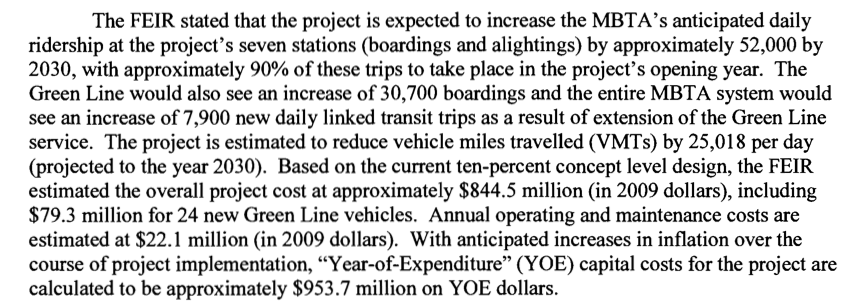
The project is expected to generate new transit ridership of 8,900 per day systemwide, projected to the year 2030. EOT anticipates starting construction of the preferred alternative by 2012 and completing construction prior to the required December 31, 2014 opening date. (Somerville Journal)
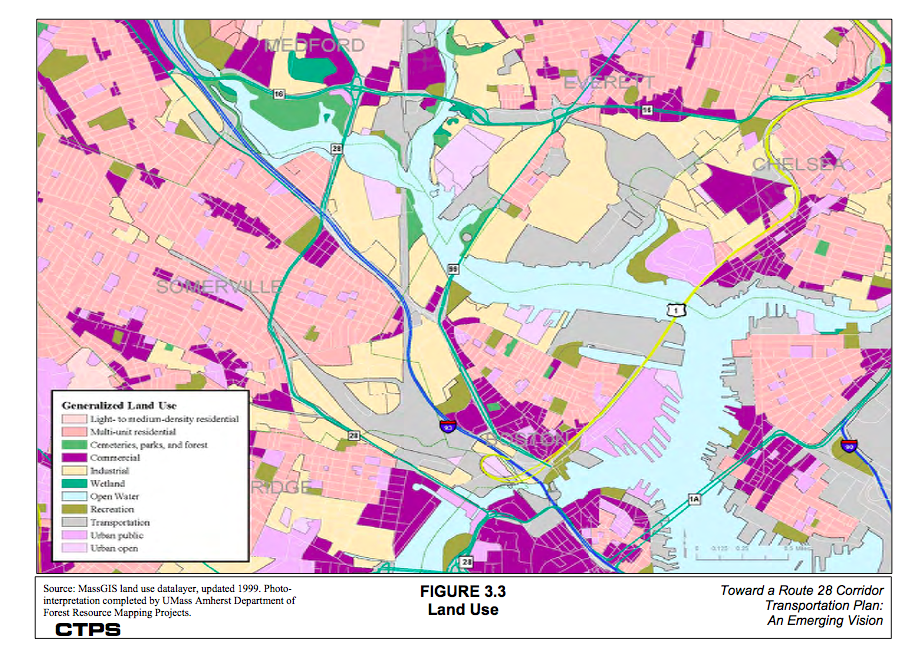
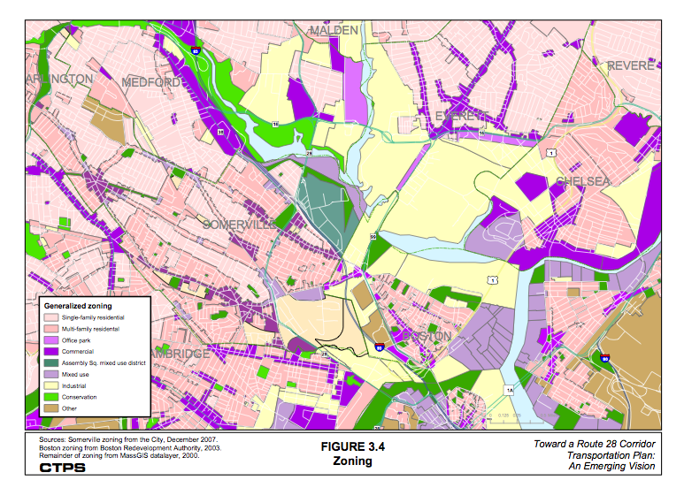
History:
McGrath Highway (formerly the Northern Artery) was completed in 1928 in order to provide a high-speed connection between the Charles and Mystic Rivers, rerouting Route 28 off local streets in Cambridge and Somerville. It was upgraded as an elevated highway in the 1950’s Over the next 10 years the highway will need to be substantially reconstructed, or torn down. If it is to be reconstructed, there will be significant capacity reductions for a number of years. (from assignment)
In 1928, several projects to relieve congestion in the Boston area were completed. One of these was the opening of the Boston University Bridge (at the time known as Cottage Farm Bridge). The opening of this new bridge over the Charles River resulted in the relocation of the triple concurrency of US 1, US 3, and Route 28 onto it. The routes left the Riverway using Park Drive and Mountfort Street (both now designated as part of Route 2) to reach the bridge. In Cambridge and Somerville, a new boulevard known as the Northern Artery was built over part of Somerville Avenue and Medford Street, continuing north on a new roadway cutting across Somerville to Fellsway East, which was also paved over by the new Northern Artery. The Northern Artery provided a high speed connection between the Charles River and the Mystic River. US 1 and Route 28 were relocated off of local streets in Cambridge and Somerville onto the Northern Artery when it opened to traffic. From the Boston University Bridge, the two routes used Memorial Drive and Cambridge Parkway to reach the Northern Artery. The Northern Artery was later renamed as the Monsignor O'Brien Highway in Cambridge and the Monsignor McGrath Highway in Somerville.
After crossing the river, Route 28 runs along the six-lane divided highway known as Monsignor O'Brien Highway (in Cambridge) and Monsignor McGrath Highway (in Somerville) to connect to the Fellsway
Existing population density is very high in Somerville, where approximately 75,000 residents live in an area of four square miles, and also high along Route 28’s middle section. Population density along the study corridor is lowest in the northern segment, from the Mystic River Bridge to Mystic Avenue; it is 1,200 people per square mile in the Mystic View neighborhood. In the middle section, between Mystic Avenue and Medford Street, it ranges from 1,200 to 12,000 people per square mile. Along its lower segment, from Medford Street to Museum Way, population density in East Cambridge is about 6,500 people per square mile. The densest areas of residential population contain multifamily residential buildings, including high-rise apartments. (Route28FinalReport.pdf)
Trends: The mayor is interested in seeing the elevated structure dismantled.
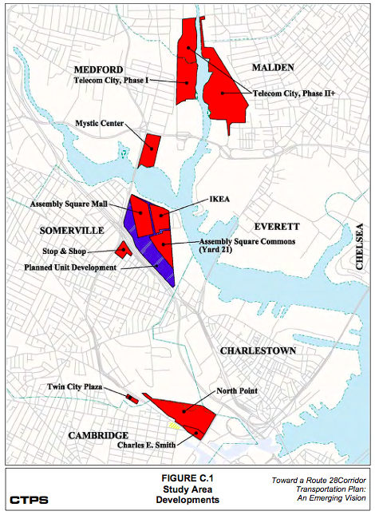
Project Future Conditions:
Actors:
Institutions:
Primary Roles:
Interests:
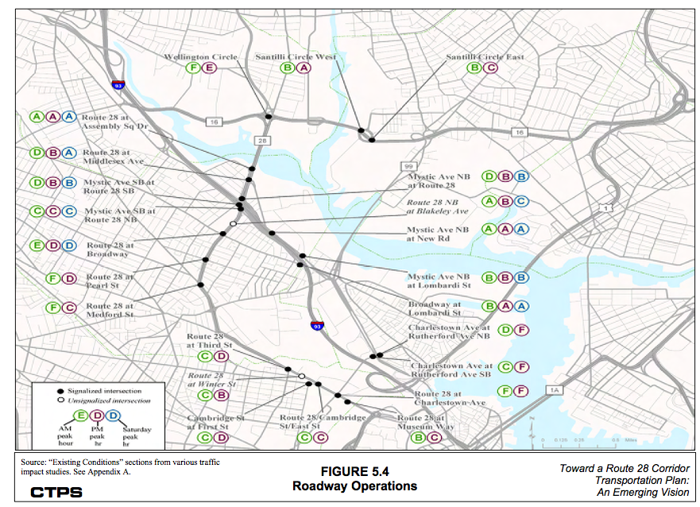
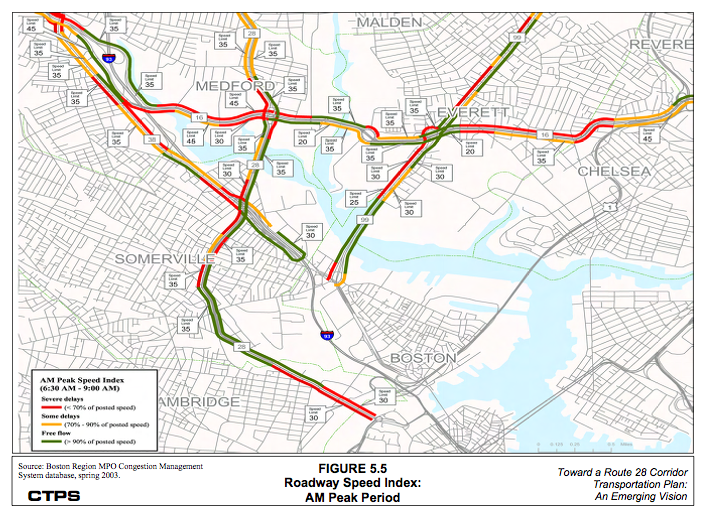
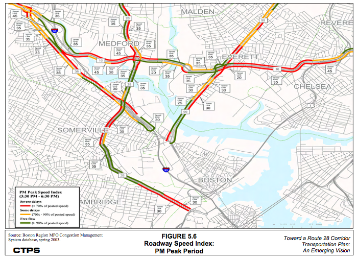
Table B.1 Top 1000 Crash Locations in Study Area (1995-1999)
Location Rank City
Route 28/Mystic Avenue/I-93 : 4 Somerville
Route 28/Washington Street : 30 Somerville
Route 28/Broadway 107 Somerville
Route 28/Pearl Street : 212 Somerville
Route 28/Land Boulevard : 196 Cambridge
(Route28FinalReport)
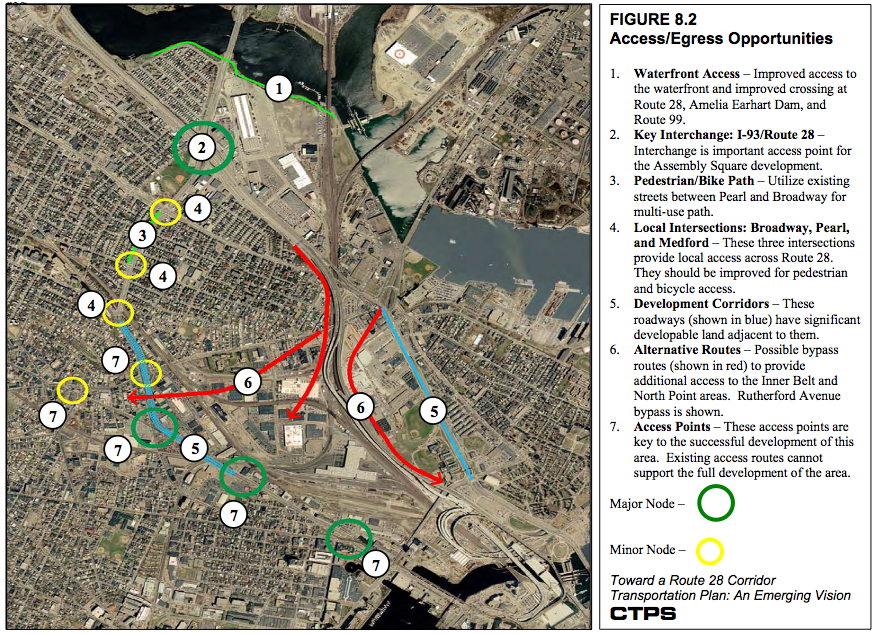
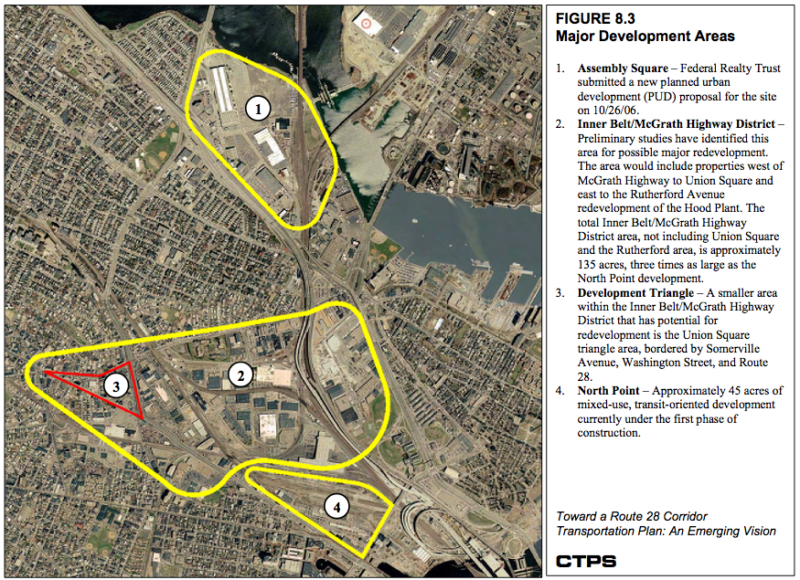
8.6 INTERNAL CIRCULATION
As with the Assembly Square District, where an internal circulation system was also studied, an internal roadway system will have to be planned for the McGrath Corridor District, the Inner Belt District, and possibly the North Point development, including interconnections among them. For example, a “Brickbottom Boulevard” could be created in the largely abandoned MBTA right-of- way that formerly was used by the Lowell/New Hampshire Line. This could form part of a connector road system parallel to Route 28 that would connect Charleston Avenue (Gilmore Bridge) to Washington Street behind North Point and between the McGrath Corridor and the Inner Belt District. (Route28FinalReport)
The traffic volume pattern and intensity of the roadway would of course be important factors in determining the feasibility of reconstructing it as a boulevard that intersects Washington Street at grade. In order to bring about significant traffic volume reductions, a variety of measures would be required that could include improved public transportation, improved incident management on I- 93, a direct I-93 connection to Brickbottom and East Cambridge, and policies promoting trip reduction, growth management, and parking limitation. Some of these ideas are already under study in the form of the Urban Ring, the Green Line extension, and the Orange Line station at Assembly Square. (Route28FinalReport)
Developers should provide mitigation funds for transportation projects, as they did for Assembly Square (City of Somerville)
Deconstruction of the elevated portion of McGrath could occur after the Green Line extension opens. Deconstruction would occur in segments:
Traffic Impacts:
Reconstruction of McGrath will lead to an immediate reduction of traffic along McGrath. Any drivers who used McGrath as an alternative to I93 will cease to do so. Regional drivers with destinations in Somerville and Cambridge will probably use the suggested detours. Some may permanently switch routes with the permanent reduction of lane capacity on McGrath. Local traffic will continue to use the portions of McGrath that remain open during construction. The opening of the greenline will convert some local drivers to transit. Without an urban ring, few regional drivers will switch to transit. The creation of the East Somerville Free Transit zone will convert additional drivers to transit.
The new McGrath boulevard will support significantly less trips than the existing configuration. With four total traffic lanes open to commuters during rush hour, McGrath will maintain ⅔ of its lane capacity on the currently unelevated sections and 100% of its lane capacity on the currently elevated portion. The new at-grade intersections at Somerville Ave. and Washington St. will decrease throughput on McGrath, but may have a useful traffic metering effect. Limiting speeds on the boulevard to 30mph will also slow throughput. Outside of commuting hours, two lanes of McGrath will be dedicated to transit, improving access to Assembly Square and other developments.
Benefits:
Reduced traffic and reduced traffic speeds will decrease pollution and danger to drivers, pedestrians, and cyclists. Parcels along the boulevard will become more appealing to retail use.
Operation and maintenance of the boulevard will be less than the elevated structures. New bus service from Assembly Square to Lechmere will be free throughout Somerville and possibly free from Lechmere.
There is probably no politically feasible alternative to a boulevard, and likely nothing more than four lanes will be tolerated. There is the danger of using much of the saved space for on street parking. On-street parking will accomplish some traffic slowdowns but has more disadvantages than advantage. This space is better reallocated for safe cycle tracks and better sidewalk area. A six lane road would propagate the unsatisfactory urban conditions that exist on McGrath at Broadway.
A viable alternative to the Free Transit zone would be to issue transit passes to all East Somerville residents. Though this option would give East Somerville residents a greater advantage than simply a free zone, it would create more political problems. First, a non-arbitrary definition of East Somerville residents is more difficult than creating a zone where all users ride free. It would also fail to give outsider any incentive to shop and recreate in East Somerville. With the free transit zone, outsiders would have some incentive to come to destinations like Union Square by transit, knowing they could have the departing trip for free.
A no-free transit alternative would result in more traffic from local trips. It would eliminate the opportunity to decrease headways on the new Green Line extensions. It would also eliminate the potential one-way fare revenue from new riders who road outside the zone from East Somerville or into East Somerville from outside. Somerville might be able to convince the state to fund more improvements to the boulevard with the money saved by not rebuilding the elevated structure, rather than asking the state to commit that money to a free transit zone. However, being a state road, the state will already be funding the boulevard itself. It makes more sense to dedicate the cost savings of a boulevard to increasing demand for the road with free transit, than to use the saved money to make the boulevard better in other ways.
Boulevard and free transit zone
You can build a strong constiuency with most East Somerville businesses and developers by creating an attractive boulevard and free transit zone. You should also have strong support from the citizens of East Somerville, except for those who support the current McGrath configuration and do not use transit. I believe that the residents of West Somerville will also support this plan. They will derive some benefit from free transit in East Somervile and support the improvement on McGrath. I believe the Somerville Chamber of Commerce will support the development plans for a McGrath boulevard. The the broad group of citizen and business supporter to lobby the state to dedicate save capital funding to the transit zone. [Look for precedents] You will find it useful to crate an advocacy group supported by the aforementioned supporters called something to the effect of East Somerville Free Transit Zone Solution.
Certain community organizations will strongly favor this proposal, like East Somerville Main Streets and the Somerville Community Corportation. Make sure to use these reach to build public support priory to sending the proposal to the state.
Your enemies will mainly be the businesses along McGrath that most benefit from its current easy access, such as the Target. You will also likely see resistance from the other businesses along McGrath whose buildings may loose visibility if development rights are sold along the shrunken roadway. You will have to be sensitive to some of these businesses, strategically configuring new parcels or leaving some areas as open space to maintain visibility. You may also experience resistance from some commuters who use McGrath, but I think the new configuration can be sold to them on the grounds of decreasing the overall traffic.
You policy should be supported by Cambridge. Cambridge has an equal interest in redeveloping Route 28 into a smaller boulevard to benefit its developments at North Point and East Cambridge. Engage the mayor and Cambridge Chamber of Commerce early with your plans. A coordinated plan with Cambridge to narrow McGrath/Obrien to a boulevard would make a stronger case to the state.
Though the state will be supportive of the boulevard, it is unlikely that they will react well to funding a free transit zone with the money saved on the boulevard. It is essential that you have a strong support base to present to the state. Make sure to apply to the federal Small Starts program for the dedicated McGrath Boulevard bus lane in order to improve your case with the state. Demonstrating the possibly of federal capital to support the transit zone will be very valuable to justifying the transit zone.
Assignment Questions:
1. Do you agree that Mayor Curtatone is correct?
2. Should he propose mitigation measures for the reduction of impacts during the
reconstruction process? What are the pros and cons?
3. In either case, what sort of short-term action can the Mayor propose (over the next
6 months to a year) that would set the proper precedent for either action you
recommend he take?
4. Who are the other actors who might have an interest in either side of the issue?
How can Mayor Curtatone work with them to form alliances, or convert opponents?
Transit Usage at Lechmere Station and Buses through East Somerville
|
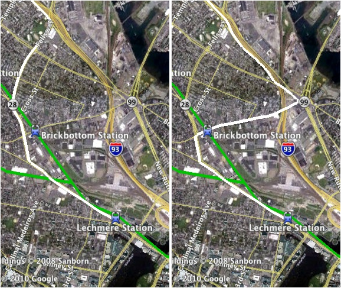
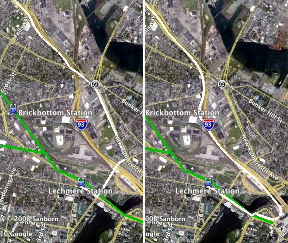
Access Alternatives to East Cambridge from I95 Southbound. Option 1 fully utilizes McGrath Hwy. Option 2 access McGrath Hwy at Washington St. Option 3 uses W. Rutherford Ave. and avoids McGrath. Option 4 uses the Leverett Circle Connector and avoids McGrath.
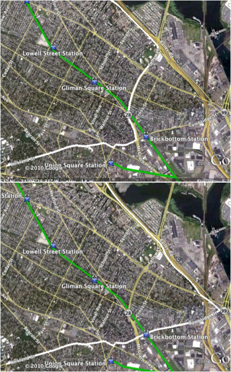
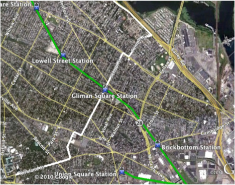
Alternative access options to Harvard from I95 North. Option 1 uses McGrath until Washington St. Option 2 uses Cambridge St. and Washington St. while avoiding McGrath. Option 3 uses Temple St. and School St. and avoids McGrath Hwy.
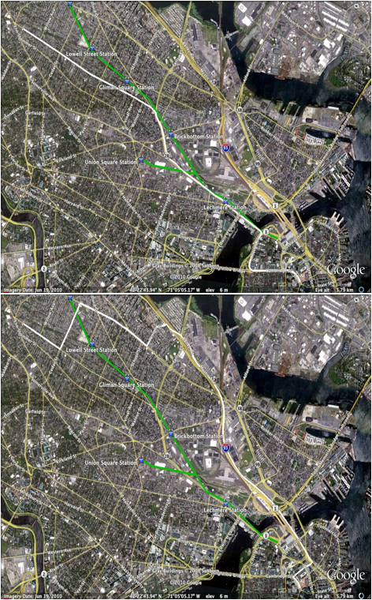
Alternatives for accessing Davis Square from Downtown Boston. Option 1 uses McGrath Hwy until Highland Ave. Option 2 uses I93 and avoids McGrath Hwy.
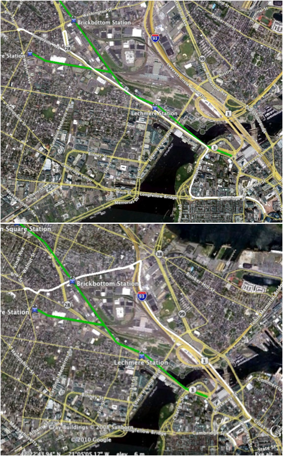
Alternatives for accessing Union Square from Downtown Boston. Option 1 uses McGrath Hwy. until Washington St. Option 2 uses McGrath Hwy. uses I95, Cambridge St., and Washington St. and avoids McGrath Hwy.